Ajourné Interval Palette · M05 information-first remediation
Comparisons, inversion, register and introductory figures
The m3/M3 and P4/tritone/P5 comparisons are on the proofs page. Naming-by-letters (IPV-34) and the triad figure (IPV-35) are unchanged from the earlier gallery: they teach spelling and chords, not interval identity.
IPV-23 · IPF-compare-m2-M2
Minor second versus major second
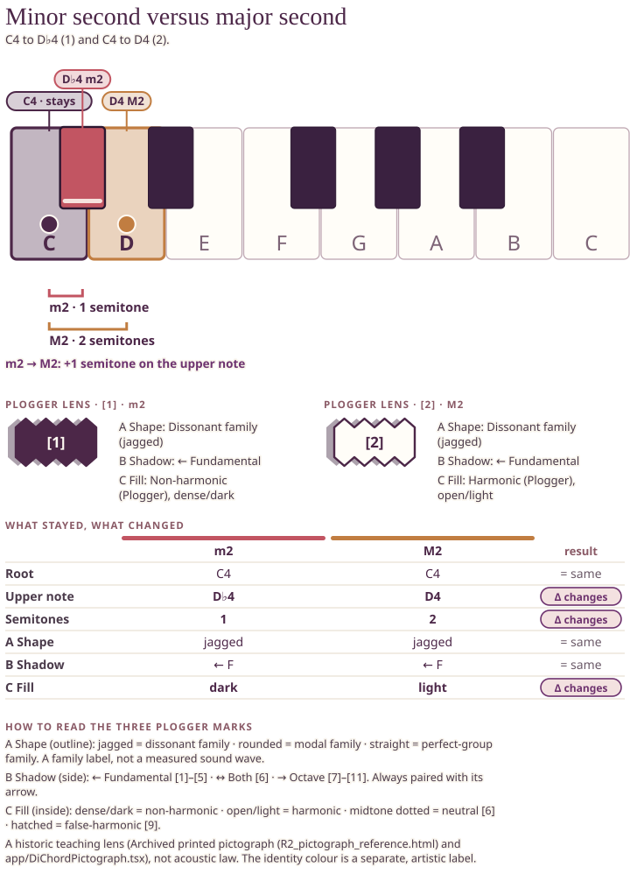
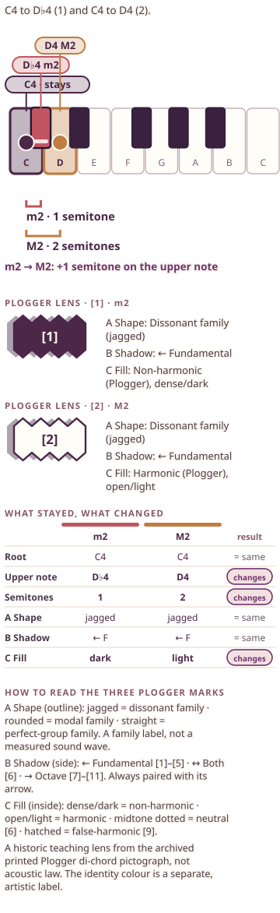
IPV-26 · IPF-compare-m6-M6
Minor sixth versus major sixth
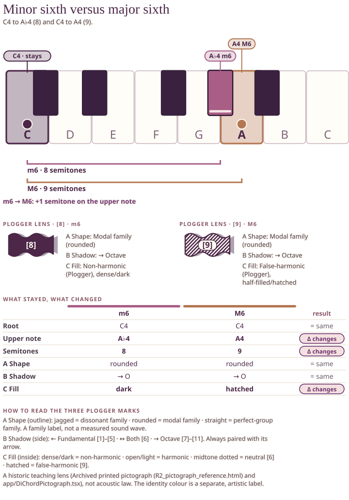
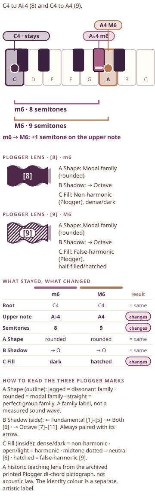
IPV-27 · IPF-compare-m7-M7
Minor seventh versus major seventh
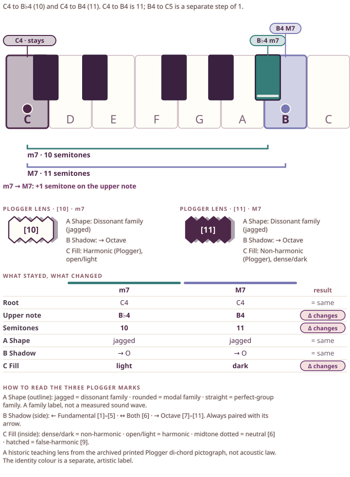
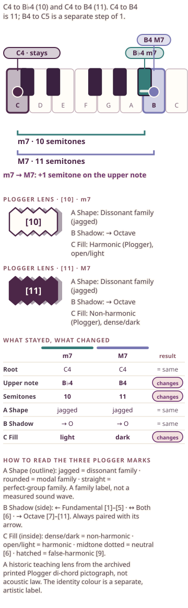
IPV-29 · IPF-invert
Inversion
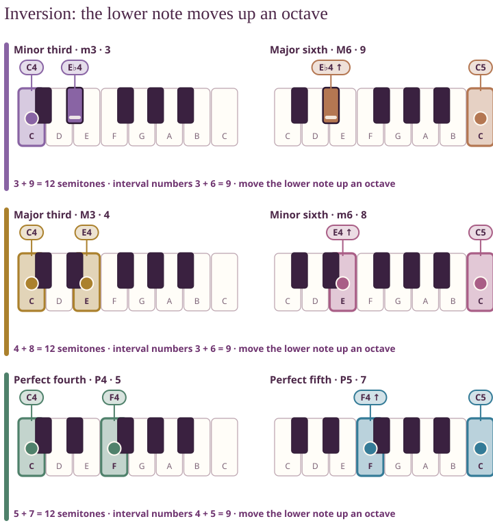
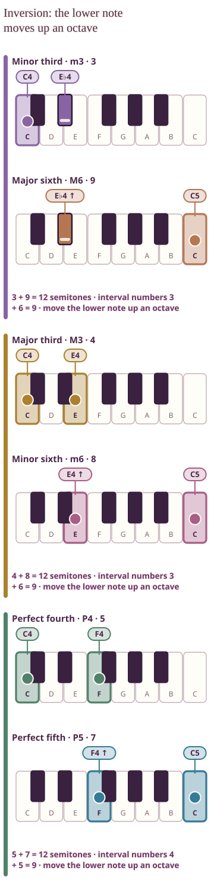
IPV-28 · IPF-register
Same interval, three registers
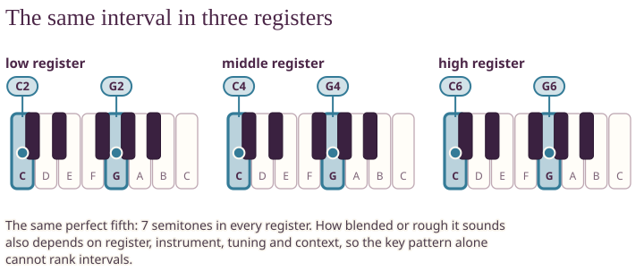
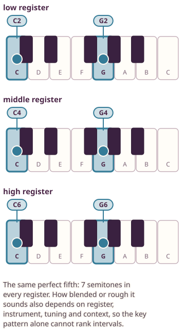
IPV-04 · IPF-intro-04
What is an interval?
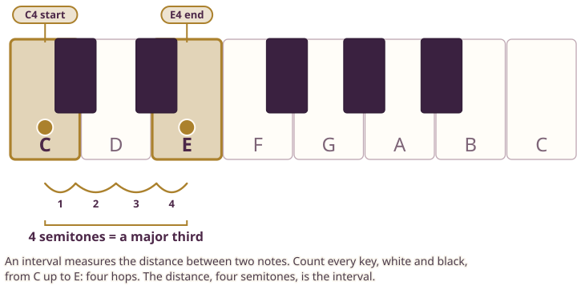
IPV-05 · IPF-intro-05
Melodic versus harmonic
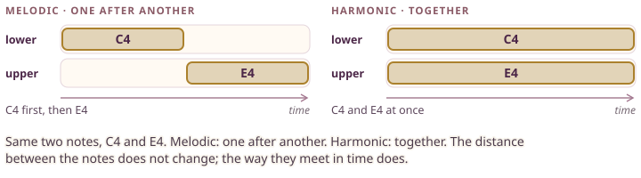